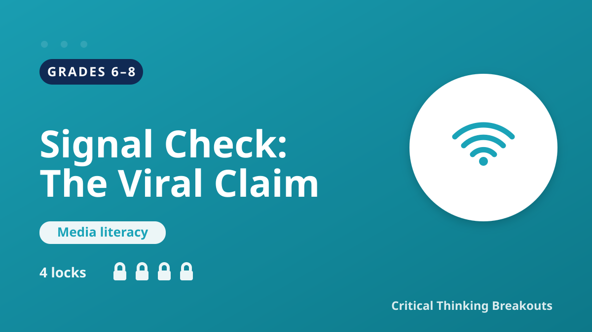

Media literacy · Grades 6–8

Premise: A shocking "BREAKING" post is going viral in the class group chat. Students trace it to its source, count the misinformation red flags, and put the verify-before-you-share process in order.
Students open the clue board, examine the evidence, and solve five locks (a source lock, a red-flag count lock, a word lock, a process-order lock, and an evidence-sort lock). Each lock reveals a short reasoning explanation when solved. The answer key is not shown on this page.
▶ Open Student BreakoutBuilds source-evaluation and inquiry skills across ELAR and digital-citizenship standards:
ELA 6–8.12.J examine sources for credibility, bias, and accuracy.ELA 6–8.13 (inquiry/research) gather and assess the reliability of information.ELA 6–8.6.F–H infer, evaluate, and synthesize across sources.